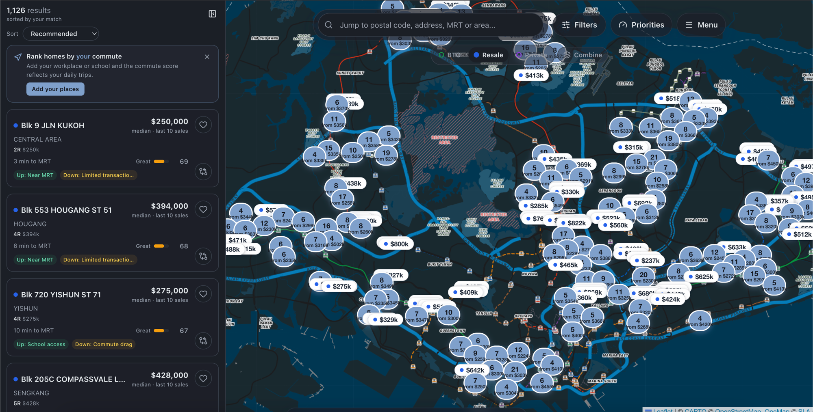

Unit 01
RexSG
Product · Geospatial · PostGIS
HDB Match: a live map for one of Singapore's biggest decisions.

- Brief
- Turn fragmented housing data into a decision people can understand and defend.
- Move
- We didn't ask buyers to trust a black-box score. Drag the weight between commute, lifestyle, value, and lease, and the shortlist reorders live, on the same PostGIS-backed data underneath the whole time, so the trade-off is felt, not just reported.
Read the build story
Challenge
Property search shows inventory. Buyers need judgement.
Price, lease, schools, transit, household needs, and future risk sit across different sources. Comparing them by hand is slow and hard to defend to a spouse, a parent, or a bank.
Approach
One map, weights the buyer controls.
A deterministic geospatial engine (resale medians, accessibility scoring, commute and appreciation models) sits under a live map. The buyer sets what matters; the map re-sorts in front of them.
Outcome
A live, public product, not a prototype.
Real resale listings, real filters, and a shortlist a buyer can defend, because every number traces back to the same evidence underneath.
Visit rexsg.com
FastAPI · React · PostGIS · Leaflet